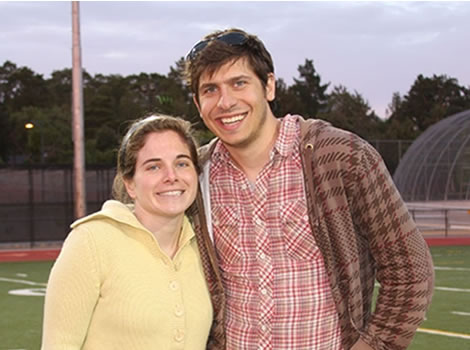
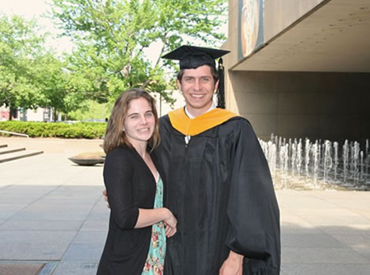
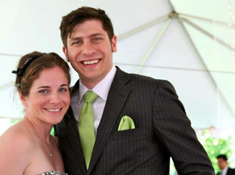
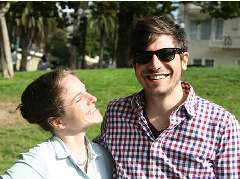

I'll Ride Anywhere With You
Simon and Sarah met in 1995, after Sarah's brother
Matt and Simon began playing football together at recess. Sarah can't
remember exactly when they met (Simon was short and had a ponytail so
he wasn't exactly on her radar), but she remembers him visiting her in
college and playing
flip cup at her graduation party. Simon's first memory of Sarah is when
she punched him in the arm and said he needed to "toughen up" (he did).
Thirteen years later they re-found each other the night before
Thanksgiving in Hartford, CT.
A few weeks later Simon visited Sarah in New York for a magical
flannel-filled Christmas date. That's when they knew this was the start
of something special.
For the next two years they chased each other around New England,
co-habitated briefly in Brooklyn, and eventually made it to San
Francisco hand in hand. Their life together has been an adventure, and
they are excited for the next part of the ride: marriage!

California Adventure! (9/21/2006)

Brian's HS Graduation (6/23/2009)

Graduation from CMU (5/16/2010)

Sandy's Wedding (5/26/2012)

Lauren's Birthday (7/13/2012)
Here for the Party!
The ceremony and reception will be held on Saturday,
March 16, 2013 at the Stable Cafe.
Stable Cafe
2128 Folsom Street (@ 17th)
San Francisco, CA 94110
(415) 552 1199
Tentative schedule of events:
- 3:00pm Ceremony Begins
- 4:00pm Cocktail Hour Surprise
- 6:30pm Toasts
- 7:00pm Dinner
- 10:00pm Party at Stable Cafe ends
- 10:30pm After-party at Mission Bowling Club
begins
Settle In for the Weekend
The wedding is taking place in the Mission District of San Francisco. There are not many hotels nearby so
we recommend using AirBNB to find a place.
Due to the small size of our wedding, blocking rooms is not an option. Please feel free to also check out the following hotels:
The Prescott Hotel
545 Post Street
San Francisco, CA 94102
415.563.0303
Sir Francis Drake
450 Powell Street
San Francisco, CA 94102
415.392.7755
The Westin St. Francis on Union Square
335 Powell Street
San Francisco, CA 94102
Registry?
We are not doing a registry; we have all we need in each other! We also appreciate our guests making
the effort to join us out in San Francisco and feel your presence is our present! If you wish to give us a gift we are saving up for our
trekking honeymoon in Chile and our favorite stores include Anthropologie and West Elm. We also encourage
donations made on our behalf to New Door Ventures (where Sarah volunteers in SF). Hope that helps :)
-->